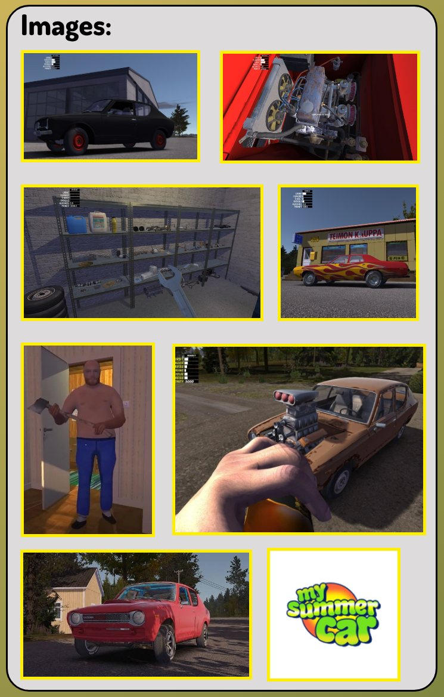
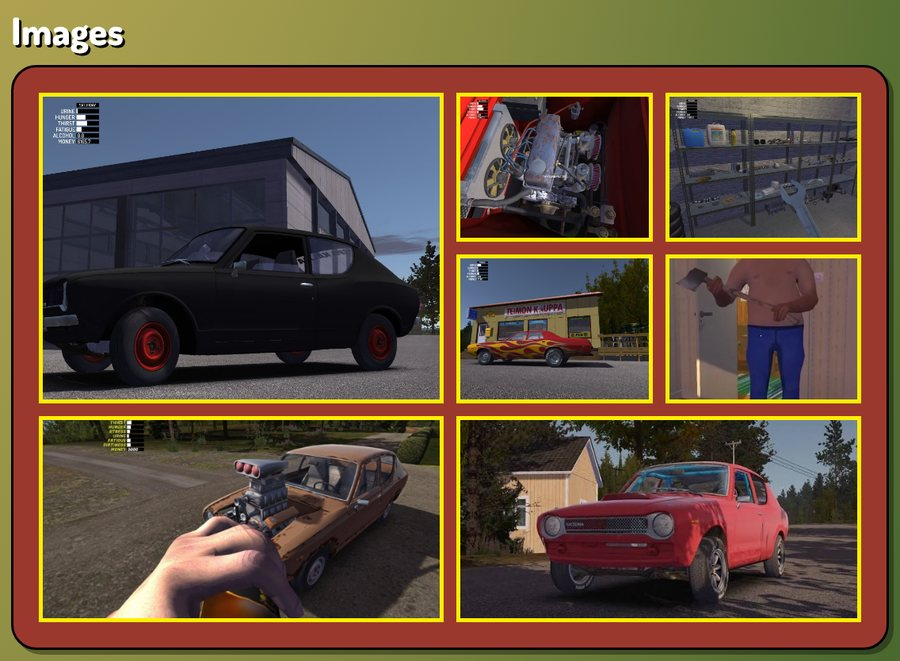
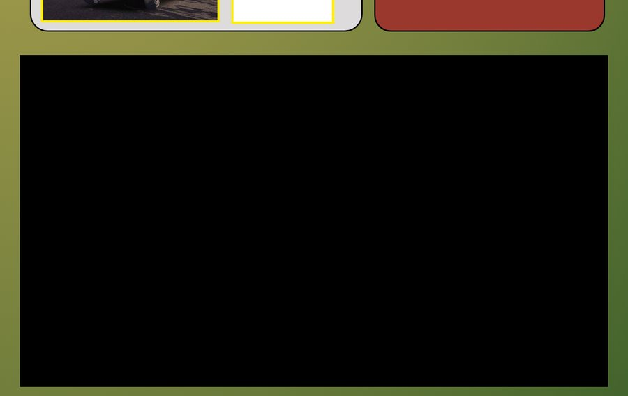
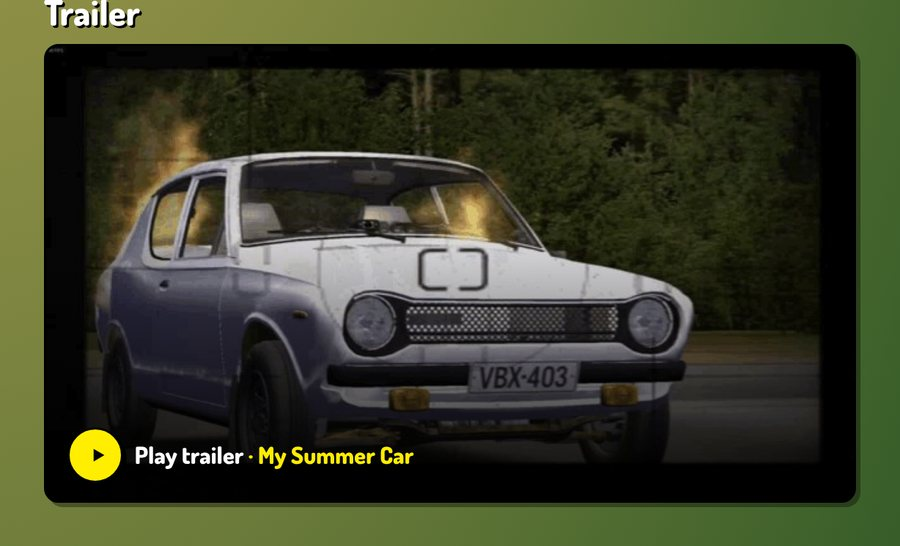
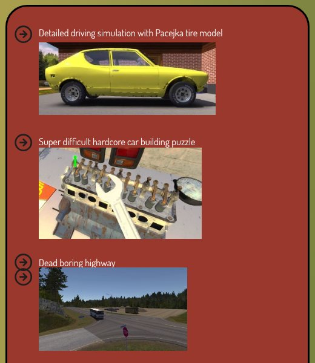
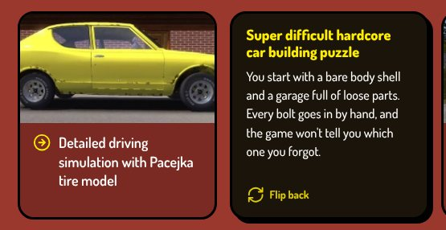
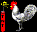

Design review: My Summer Car
Issues found while rebuilding the Figma frame “My summer car” (1366 × 3517) in Bootstrap 5. Each row shows what the design does and how the improved build handles it. The retro “HOT!” and under-construction look is treated as intentional and kept.
Updated 28 October 2026: five new issues, marked New, with before/after screenshots.
Layout
Car image cut off at the left edge High
Firefly 1 sits at x = −216, so a third of the car is outside the page.
Moved into a sticker row inside the container, shown whole.
Features panel much taller than its content Med
The red panel is stretched to match the Images panel, leaving a large empty block under “PC-only game”.
Features is its own full-width section; content sets the height.
No grid: random image sizes and gaps Med
Gallery tiles range from 225 to 426 px wide with uneven gutters; feature shots from 140 to 292 px. The logo tile is narrower than its row.
Features sit in equal 16:9 cards. The gallery uses one big shot plus a fixed pattern, so every row is full at every screen size.
Fixed 1366 px width High
Only a desktop frame exists; everything is absolutely positioned.
Responsive from phone to desktop, collapsing nav on small screens.
Scrollbar drawn into the design Low
A macOS scrollbar component and a page-control component are placed on the canvas at the top right.
Removed; the browser draws its own.
Light grey gallery panel New Med
The Images panel is #dddbdb, the only light surface on a dark, saturated page. It pulls the eye away from the screenshots, and the yellow frames barely stand out against it. The white logo tile adds even more glare.
Red panel like Features, so the yellow frames read clearly. The logo tile is gone (the logo is already in the header), leaving 7 real screenshots in a layout with no gaps.


Video box breaks the page edges New Med
The video sits at x = 43 and is 1280 px wide, while every panel above starts at x = 65, so it sticks out on the left and right. Before it plays it's a plain black box with no picture or title.
Aligned to the same container as the other sections, with a cover image, a title bar and a play button. YouTube's player only loads when someone presses play.


Readability
Blue text on dark red High
The developer quote is #0037ff on #9b382e, a contrast ratio of 1.0:1, so the two colours have the same brightness (WCAG asks for 4.5:1).
White italic text in a dashed yellow callout.
Images laid over the text High
“HOT!” badges sit on top of runs of spaces typed into the paragraph, so the text has holes and breaks at any other width. The skull and a black rectangle are stacked on the permadeath image.
Badges are inline images in the sentence; the permadeath image is used once on its own.
Small, multicolour body copy Med
16 px ExtraBold in a 651 px box, switching between white, yellow and blue.
18 px with 1.55 line height; yellow kept only for the highlighted sentence.
Centred news list with low contrast Med
Yellow text centred on olive green; dates are buried at the start of long centred lines.
Dark panel, left-aligned list with a fixed date column.
“So have fun with::::::::” leads nowhere Low
The sentence ends in colons with nothing after it.
Turned into a link that jumps to Features.
Interaction
Arrows that look clickable but do nothing New High
Every feature starts with an arrow in a circle, which reads as a button. Visitors click it and nothing happens. There's also a doubled arrow at “Dead boring highway”.
The arrow now keeps its promise: clicking a card flips it over to show a short description. It works with the keyboard too.


Consistency and handoff
Animated GIFs not marked in the handoff New Med
Six images are animated GIFs (the rooster, the “HOT!” badges, the skull, the smiley, the fire and the construction strip), but nothing in the file says so. Figma's export hands developers a single still frame, so the animation is silently lost.
The original GIFs were pulled from the prototype instead. In future, name animated layers (for example rooster.gif) or add a note so they're exported as files.


Hand-placed, duplicated and hidden icons Med
14 arrow instances placed one by one: one duplicate (y = 558 and 582) and four hidden behind other layers (y = 1620–2021). Feature text is spaced with empty lines.
One arrow per feature card, generated by the markup.
Mismatched social logos Med
Steam (round), YouTube (wordmark), Facebook (square) and X are four different styles and sizes, from 107 to 279 px wide.
Four identical yellow circle buttons with matching icons and labels for screen readers.
Navigation doesn’t match the sections Med
Nav offers Multimedia / News / Follow as unlinked buttons with uneven widths; About and Features have no link.
Sticky nav linking every section, with the current section highlighted.
Unnamed layers Low
Layers are “image 1” to “image 21”, “Rectangle 4”, “Group 6”.
Assets renamed by content (feat-sauna.jpg, gallery-3.jpg); alt text added.